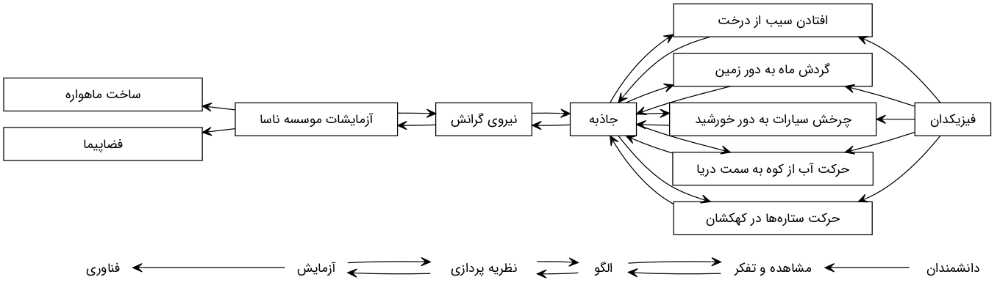
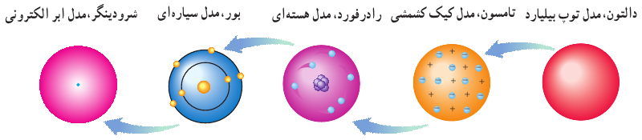
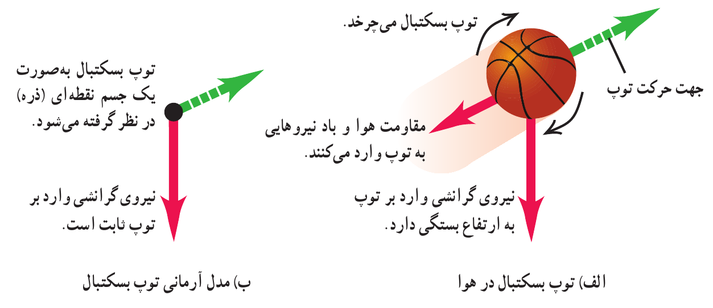
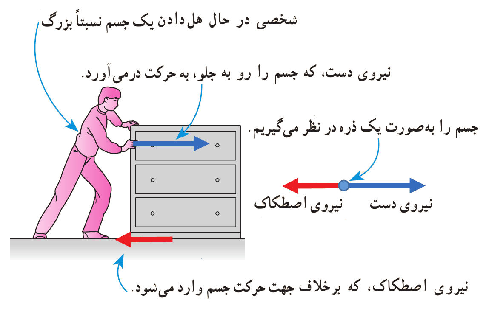

فیزیک
دانش بنیادی

شکل 1: بوجود آمدن یک نظریه یا قانون در فیزیک
تعریف 1 مدلها و نظریههای فیزیکی:
- در طول زمان همواره معتبر نیستند
- ممکن است دستخوش تغییر شوند
- ممکن است با توجه به نتایج آزمایشهای جدید منجر به بازنگری قبلی شوند
- ممکن است نظریهای جدیدی جایگزین قبلی شوند

شکل 2: تغییر مدل اتمی در طی زمان
نکته. نقطه قوت دانش فیزیک: ویژگی آزمون پذیری و اصلاح نظریههای فیزیکی
مدل سازی
تعریف 2 مدلسازی در فیزیک:
ساده و آرمانی (ایدهآل) سازی یک پدیده فیزیکی برای بررسی و تحلیل
درنظر گرفتن اثرهای مهم و تعیین کننده (نیروی وزن، نیروی اصطکاک و …)
نادیده گرفتن اثرهای جزئی (مثل مقاومت هوا، پیچیدگی در شکل و …)

شکل 3: استفاده از یک مدل آرمانی برای سادهسازی تحلیل حرکت یک توپ بسکتبال در هوا
